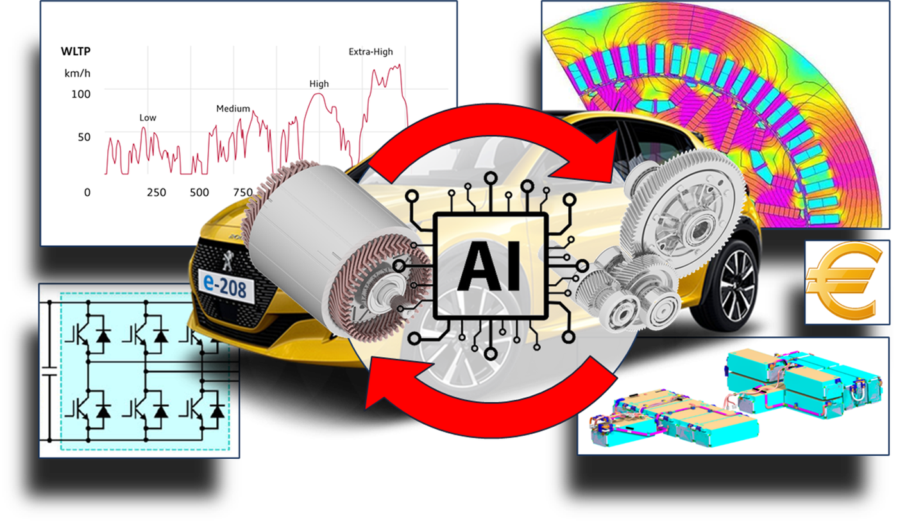

Logiciel
e-Pivot
Logiciel commun SATIE / Stellantis pour l optimisation de machines electriques et de chaines de traction a l echelle vehicule.
Une selection de faits saillants pour la vitrine scientifique du site.

Logiciel commun SATIE / Stellantis pour l optimisation de machines electriques et de chaines de traction a l echelle vehicule.

Illustration des travaux publies sur la conception de stators de machines electriques.

Mise en valeur des brevets recents cites dans la presentation de mars 2026.